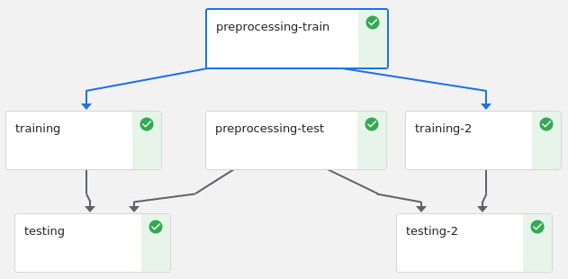

Automating AI lifecycle: the DDoS use case
Eros Zaupa
Project goals
- CICDDoS2019
- Explore a new dataset for DDoS attacks
- DNN
- Develop a detection system using the dataset
- Kubeflow
- Design and develop a ML pipeline
Why
AI solutions have a typical lifecycle
- Preprocessing
- Convert data into a suitable format for the problem under study
- Hyper-parameter tuning
- Search the best model configuration for the task
- Testing
- Measure the model performances on unseen data
Problem - Resource and time demanding
What
Find a way to automate and speed up this lifecycle
- Idea
- Distribute the workload among different units
- Identify any independent part of the execution flow
- Parallelize tasks when possible
How
- Kubeflow
- Deployment of ML workflows on Kubernetes
- Toolkit for K8s
- Simple, portable and scalable
- Development, testing, and production-level serving
CICDDoS2019 - Dataset
- Raw data
- With network traffic and event logs
- CSV files
- More than 80 traffic features extracted from the raw data
Datasets for DNN
Training dataset
Testing dataset
Tensorflow Estimators

Tensorflow API stack
Design
- Network
- Dense, feed-forward neural network
- Multiclassification
- 8 classes
- Features
- 20 most useful features
- Batch normalization
- Adam optimizer
Hyperparameter tuning
- Number of hidden units
- [60, 30, 20]
- [60, 40, 30, 20]
- Dropout rate
- 0.1
- 0.2
- Learning rate
- 0.1
- 0.3
Pipeline develoment
- Docker 18.09.7
- Kubernetes v1.15.3
- Kubeflow v1.0
- Kubeflow Pipeline SDK v1.0.0
Resources
- Master node
- 4 VCPUs, 8GB RAM, 100GB of storage
- 2 x Slave nodes
- 4 VCPUs, 16GB RAM, 100GB of storage
- OS
- Ubuntu 16.04 LTS
Pipelines
Description of an ML workflow, which
- Components, and how they combine in the form of a graph
- Inputs required for a run
- Inputs and outputs of each component
Pipelines
Components
- Base image
- All the shared dependencies
- Preprocess-train
- Training dataset + Source code
- Preprocess-test
- Testing dataset + Source code
- Train
- Source code
- Test
- Source code
Experiments
- Workspace to try different configurations of pipelines
- Organize runs into logical groups
Experiments
Behaviour
- Load is distributed
- Components are executed according to the available resources
- Failure
- If any node fails, the experiment is resumed as soon as the node is again available
Solution 1
- Jupyter notebook, implementing all the phases
- Run on a notebook server instance (2CPU, 10GB)
Solution 1
Solution 2a
Concurrent, with two branches (with training and testing) executing the hyper-parameter tuning for dropout rate and learning rate
- Branch 1 on a [60, 30, 20] structure
- Branch 2 on a [60, 40, 30, 20] structure.
Solution 2a

Solution 2b
Non-concurrent, with just one branch that executes hyper-parameter tuning on number of hidden units, learning rate and dropout rate
Solution 2b
Performance
Timing

Comments
- Significant reductions in times with concurrency
- Small overhead on component initialization and management
- Pipeline implementations are overall slower than the notebook
execution
- Warning
- Your CPU supports instructions that this TensorFlow binary was not compiled touse: SSE4.1 SSE4.2
Conclusions - Dataset
- Highly inbalanced
- Deal with the inbalance (e.g. resampling)
- More potential to be discovered
- Use of raw data (and custom exctraction of features)
Conclusions - Kubeflow
Portability, reusability, concurrency
- TensorFlow with full instruction set support
- May significantly reduce training times
- Increase the level of concurrency
- Scaling with the amount resources
- Kubeflow Katib for hyperparameter tuning
- Beta/alpha stage, focus on optimization